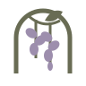
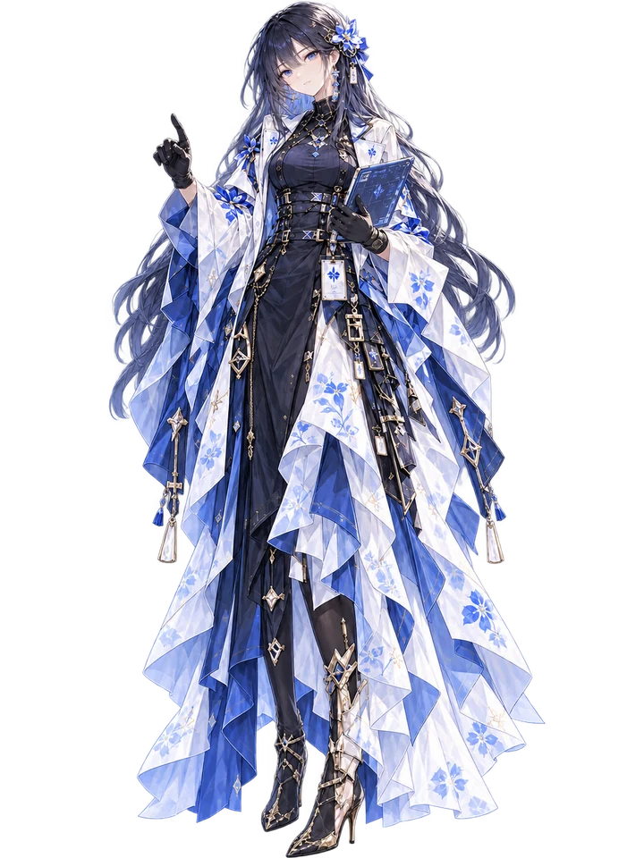
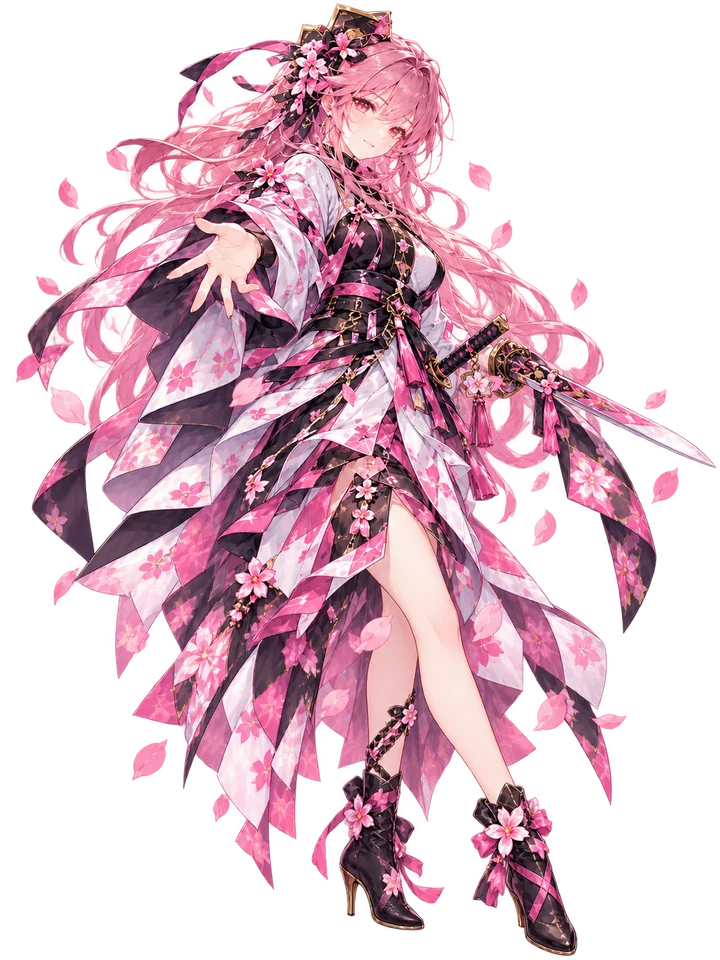
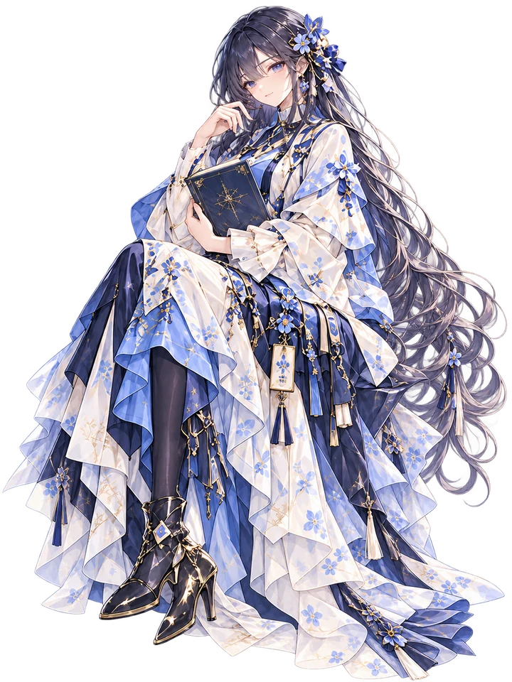
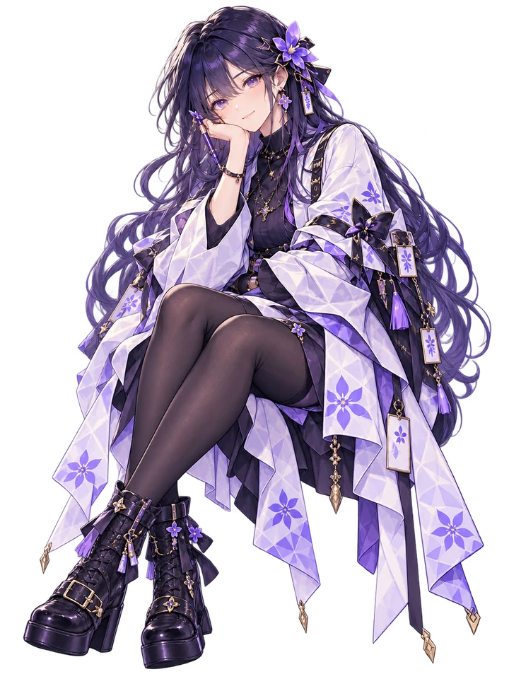
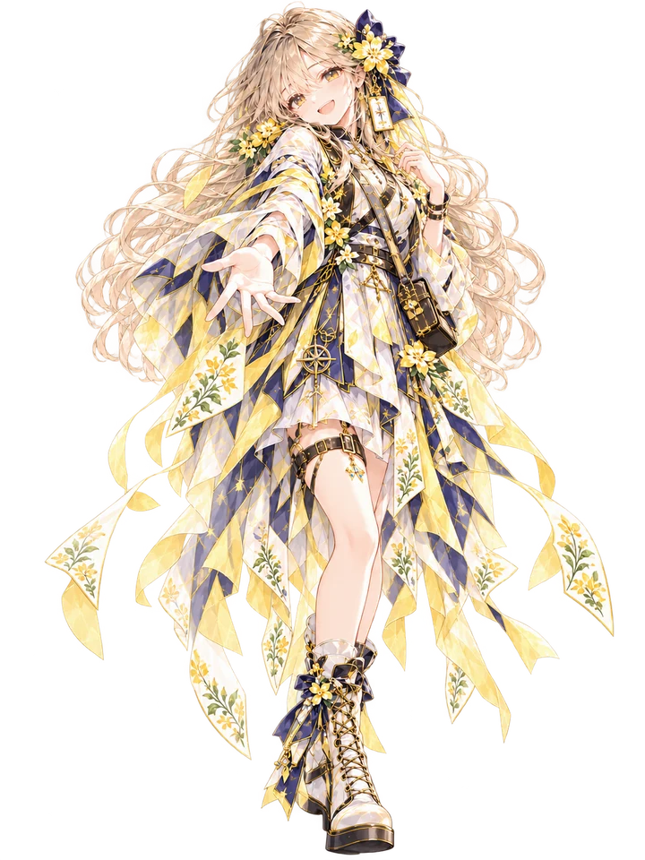
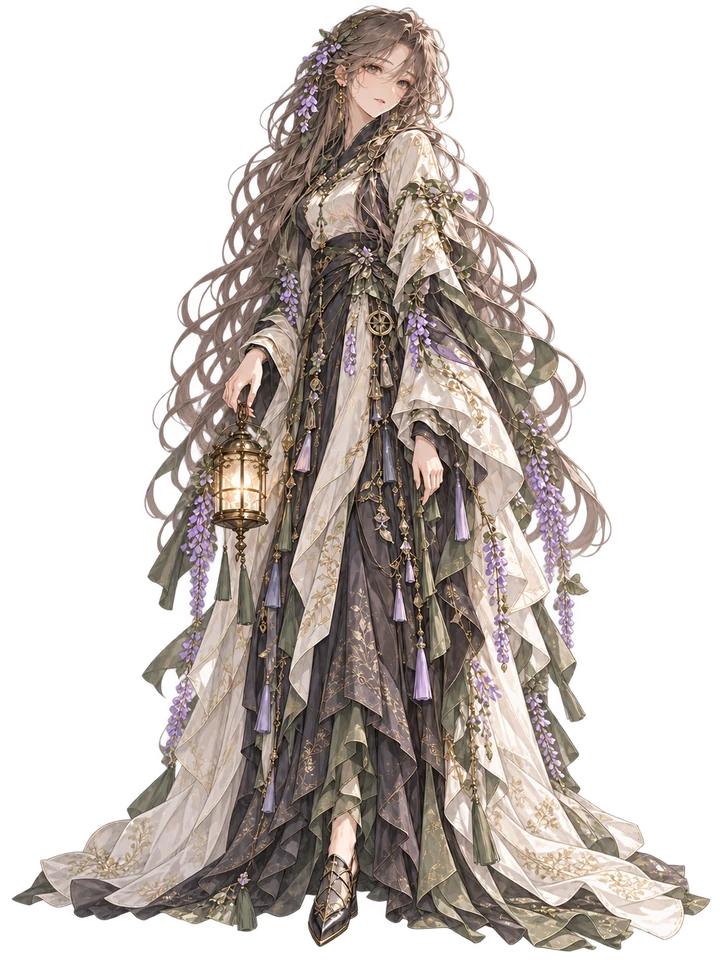

Iris Engineering
工程、项目管理与交付以系统结构组织工作，让计划、执行与交付有据可循。
了解 Iris EngineeringIRISSAKURA · FLOWERS AND CHARACTERS
我用花卉为长期维护的项目命名，也为它们设计了各自的角色。工程、框架、知识、工具、Mod 与桌面世界，连接着我的开发与创作实践。

把想法做成作品，让经验沉淀为下一次创作的起点。
SIX PROJECTS
以系统结构组织工作，让计划、执行与交付有据可循。
了解 Iris Engineering把游戏能力连接成框架，让新的世界从组合与扩展中生长。
了解 SakuraGameFramework记录想法与研究，让书页之间的连接成为下一次发现。
了解 Myosotis把工具放在触手可及的地方，陪伴日常整理、试验和创作。
了解 Violet Shelf为喜欢的游戏带来新的可能，让想法在改造和分享中成长。
了解 Freesia Mods
在桌面的一隅，为生活、停留与缓慢生长留下一片空间。
了解 WisteriaCHARACTERS

以系统结构组织工作，让计划、执行与交付有据可循。

把游戏能力连接成框架，让新的世界从组合与扩展中生长。

记录想法与研究，让书页之间的连接成为下一次发现。

把工具放在触手可及的地方，陪伴日常整理、试验和创作。

为喜欢的游戏带来新的可能，让想法在改造和分享中成长。

在桌面的一隅，为生活、停留与缓慢生长留下一片空间。
VISUAL LANGUAGE
鸢尾的工程深蓝、樱花的动态粉、勿忘我的书卷蓝、紫罗兰的工作台、香雪兰的明黄与紫藤的低饱和世界，让每个项目保有自己的辨识。
IRIS × SAKURA 连接工程与游戏框架，让组织工作与实现想法相互配合。
CREATIVE SERIES
Cross-game Mod Creation Series
New possibilities in games we love.
浏览 Freesia Mods